自動車のサスペンション
このデモでは、前後独立垂直サスペンションを含む単純化した 1/2 車両モデルについて説明します。このモデルには、車体のピッチおよびバウンスの自由度も含まれています。このデモでは、乗り心地特性を調べるためにシミュレーションをどのように使用できるかを示すモデルについて説明します。このモデルをパワートレイン シミュレーションと共に使用して、スロットル設定の変更によって生じる縦方向の移動を調べることができます。
目次
解析と物理学
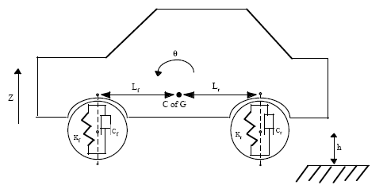
図 1: 1/2 車両モデルの自由体図
図 1 に、1/2 車両のモデル化された特性を示します。フロントおよびリア サスペンションは、バネ/ダンパー システムとしてモデル化されています。より詳細なモデルには、タイヤ モデルや、(圧縮時よりリバウンド時に減衰が大きくなる) 速度依存減衰などのダンパーの非線形性が含まれます。車体はピッチおよびバウンスの自由度を持ちます。これらは、モデル内で 4 つのステート、つまり、垂直変位、垂直速度、ピッチ角変位、ピッチ角速度で表されます。6 つの自由度を持つ完全なモデルを実装するには、ベクトル代数ブロックを使用して、軸変換と、力/変位/速度の計算を行います。フロント サスペンションは、方程式 1 に従ってバウンス (つまり、垂直の自由度) に影響を与えます。
方程式 1
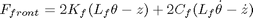
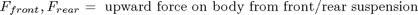
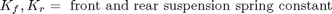
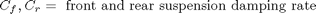
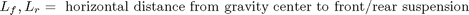
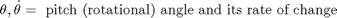
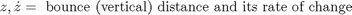
フロント サスペンションに対するピッチの影響は、方程式 2 で与えられています。
方程式 2
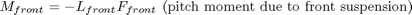
方程式 3 には、リア サスペンションの式が含まれています。
方程式 3
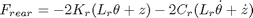
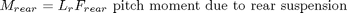
ニュートンの第 2 法則に従って、力とモーメントにより車体運動が生じます (方程式 4 を参照)。
方程式 4
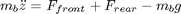

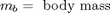
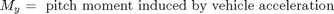
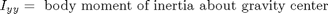
モデル
このモデルを開くには、MATLAB® コマンド ウィンドウに sldemo_suspn と入力します。図 2 に、サスペンション モデルの最上位レベルのブロック線図を示します。
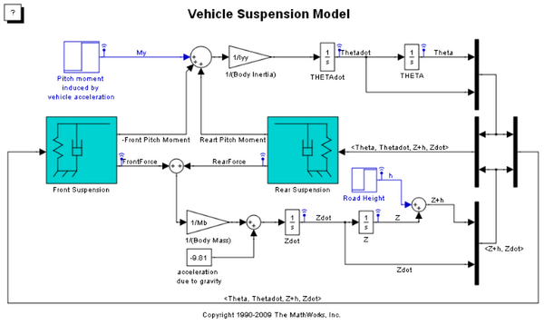図 2: サスペンション モデルの最上位レベルのブロック線図
図 2 に示すサスペンション モデルは 2 つの入力を持ち、両方の入力ブロックがモデルのブロック線図上で青色で表示されています。最初の入力は道路高です。ここで入力されるステップは、高さが階段状に変化する路面を走行する車両に対応します。2 番目の入力は、ブレーキまたは加速操作によって生じる、車輪の中心を介して作用する水平力です。縦方向の車体運動はモデル化されていないため、この入力はピッチ軸の周りのモーメントとしてのみ表示されます。
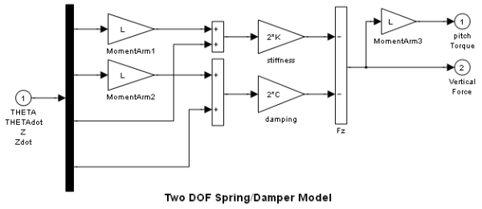図 3: FrontSuspension および RearSuspension サブシステムで使用されるバネ/ダンパー モデル
フロントおよびリア サスペンションをモデル化するバネ/ダンパー サブシステムを図 3 に示します。Front/Rear Suspension ブロックを右クリックし、［マスク内を表示] を選択してフロント/リア サスペンション サブシステムを確認します。サスペンション サブシステムは、方程式 1-3 をモデル化するために使用されます。これらの方程式は、Gain および Summation ブロックを直接使用することによって、Simulink® ブロック線図で直接実装されます。
フロントとリアの違いは次のように考慮されます。このサブシステムはマスク ブロックであるため、インスタンスごとに異なるデータ セット (L、K および C) を入力できます。さらに、L は、直交座標 x と見なされ、原点または重心に対して負または正になります。したがって、Kf、Cf および -Lf がフロント サスペンション ブロックに使用されるのに対して、Kr、Cr および Lr がリア サスペンション ブロックに使用されます。
シミュレーションの実行
このモデルを実行するには、モデル ウィンドウのツール バーの [再生] ボタンを押します。初期条件が sldemo_suspdat.m ファイルからモデル ワークスペースに読み込まれます (このファイルを開いてその内容を表示する)。モデル ワークスペースの内容を確認するには、[表示] メニュー > [モデル エクスプローラー] に進み、sldemo_suspn モデルの内容の下で、[モデル ワークスペース] を選択します。モデル ワークスペースに初期条件を読み込むことで、パラメーターを誤って変更するのを防ぎ、MATLAB ワークスペースをクリーンな状態に保つことができます。
このモデルは、MATLAB ワークスペースの sldemo_suspn_output というデータ構造に関連データのログを作成することに注意してください。構造の名前を入力して、どのようなデータが含まれているかを確認します。信号ログの詳細は、Simulink ヘルプを参照してください。

図 4: シミュレーション結果
シミュレーション結果を図 4 に示します。結果は sldemo_suspgraph.m によってプロットされます (このファイルを開いて、これがどのように行われるかを確認できます)。既定の初期条件については、次の表 1 を参照してください。
表 1: 既定の初期条件
Lf = 0.9; % front hub displacement from body gravity center (m) Lr = 1.2; % rear hub displacement from body gravity center (m) Mb = 1200; % body mass (kg) Iyy = 2100; % body moment of inertia about y-axis in (kg m^2) kf = 28000; % front suspension stiffness in (N/m) kr = 21000; % rear suspension stiffness in (N/m) cf = 2500; % front suspension damping in (N sec/m) cr = 2000; % rear suspension damping in (N sec/m)
モデルを閉じる
モデルを閉じ、MATLAB ワークスペースから生成されたデータを削除します。
まとめ
このモデルでは、サスペンションの減衰と剛性を変更する影響をシミュレートし、それにより、乗り心地と性能間のトレードオフを調べることができます。 一般に、レーシング カーはバネ剛性が非常に高く、減衰係数が高いのに対して、乗用車のバネはより柔らかく、振動応答性がより高くなります。